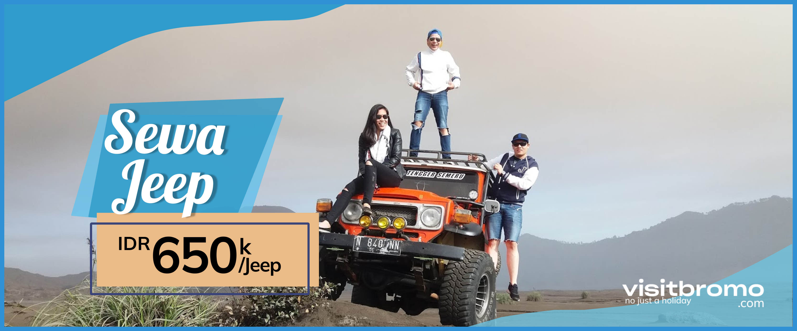
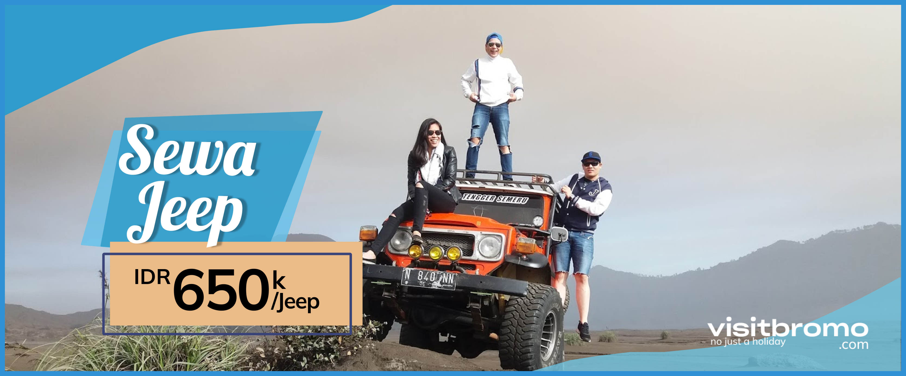
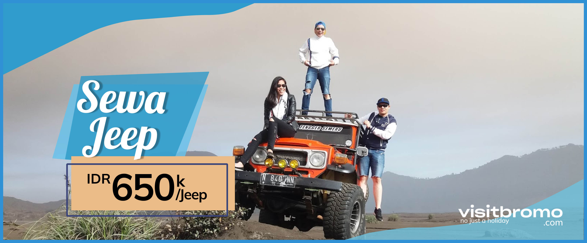

| Home | Paket Wisata | Sewa Jeep | Kontak |

Sewa Jeep - Visit Bromo menyediakan jasa sewa / rental jeep hardtop bromo dengan harga yang lebih murah. Dapat dijemput di Tumpang / Poncokusumo / Gubugklakah – Malang, Tosari / Wonokitri – Pasuruan, Sukapura / Cemorolawang / Ngadisari – Probolinggo. Dengan jalur yang aman berkapasitas max 6 penumpang. Dan, bagi Anda yang membutuhkan sewa jeep ke desa Ranu Pani Semeru dengan biaya murah, dapat menghubungi kami juga.
Visit Bromo tidak hanya menyediakan layanan umum sewa mobil. Tapi juga jeep untuk mencapai tempat-tempat wisata di bromo. Tentu saja, dengan harga yang terjangkau dan layanan yang lebih baik. Anda bahkan dapat menggunakan open trip atau paket wisata yang ditawarkan oleh nahwa tour.
Berkunjung ke daerah Bromo cukup sulit. Ada banyak jalan yang curam. Bahkan ada medan berlumpur, berkelok-kelok, jurang, jalan menanjak, dan lautan pasir. Untuk mengeksplorasi kendaraan harus membawa four wheel drive atau 4 × 4 jenis mobilnya.
Bagaimana jika Anda ingin menggunakan kendaraan sendiri ? Apa boleh naik motor atau naik mobil? Hal ini tidak diizinkan oleh pengelola Taman Nasional Bromo Tengger Semeru. Karena, peraturan yang mengharuskan pengunjung untuk jeep lokal untuk mengelilingi daerah Bromo. Dan, jangan khawatir karena pengemudi jeep memiliki banyak pengalaman dalam melintasi daerah yang sulit.

Bromo saat ini adalah tempat wisata yang banyak dikunjungi oleh banyak orang. Selain open Trip Bromo dan paket wisata , ada juga pengunjung yang menggunakan kendaraan sendiri. Tapi hal itu tidak bisa dilakukan karena pengunjung harus menggunakan jeep hardtop untuk menjelajahi keindahan Gunung Bromo.
Ada begitu banyak poin yang Anda dapat kunjungi kawasan di sekitar Taman Nasional Bromo Tengger Semeru. Untuk menuju spot anda harus menggunakan kendaraan Jeep untuk mencapainya. Berikut adalah semua spot di wilayah Taman Nasional :
Anda dapat melihat matahari terbit dengan latar belakang Gunung Bromo, Gunung Semeru dan hamparan awan putih yang indah. Matahari terlihat di balik pegunungan. Ini akan menjadi pemandangan yang indah. Selain itu, langit dalam kondisi cerah.
Pada sore hari, Anda bisa pergi ke wilayah Gunung Bromo menggunakan jeep. Dari sini Anda dapat mengambil gambar dengan latar belakang gunung dan lautan berpasir yang luas. Anda juga bisa pergi ke puncak kawah Bromo menggunakan tangga. Sejumlah langkah Anda harus mendaki 250 anak tangga.
Untuk menghemat energi, Anda dapat menyewa kuda dari parkiran jeep menuju ke tangga. Jadi Anda tidak lelah. Di kaki Gunung, ada juga candi agama Hindu. Candi ini digunakan oleh penduduk asli tengger untuk ibadah. Juga digunakan untuk upacara Kasodo yang merupakan upacara tahunan.
| STAR & TUJUAN | HARGA |
|---|---|
| Wonokitri Pasuruan ke Penanjakan 1, kawah gunung bromo | Rp 600.000,- |
| Wonokitri Pasuruan ke Penanjakan 1, kawah, pasir berbisik, savana | Rp 650.000,- |
| Wonokitri Pasuruan ke Desa Ranu Pani | Rp 1.250.000,- |
| Sukapura Probolinggo ke Penanjakan 1, Pasir Berbisik, Kawah, Savana | Rp 600.000,- |
| Tumpang Malang ke Penanjakan 1, Pasir Berbisik, Kawah, Savana | Rp 900.000,- |
| Dari Plataran Hotel dan Bromo Cottage Hotel ke Penanjakan 1, Pasir Berbisik, Kawah Bromo, Savana | Rp 650.000,- |
Alamat: Jl. Angklung Blok H1 No. 5, Tunggulwulung, Kec. Lowokwaru, Kota Malang, Jawa Timur 65143
No. Telp: 081 222 431 414 (Telkomsel)
Whatsapp: 081 222 431 414
Email: nahwatour@gmail.com
Website: nahwatour.com